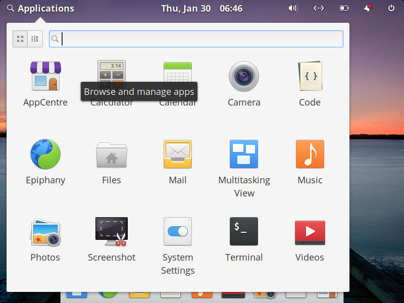
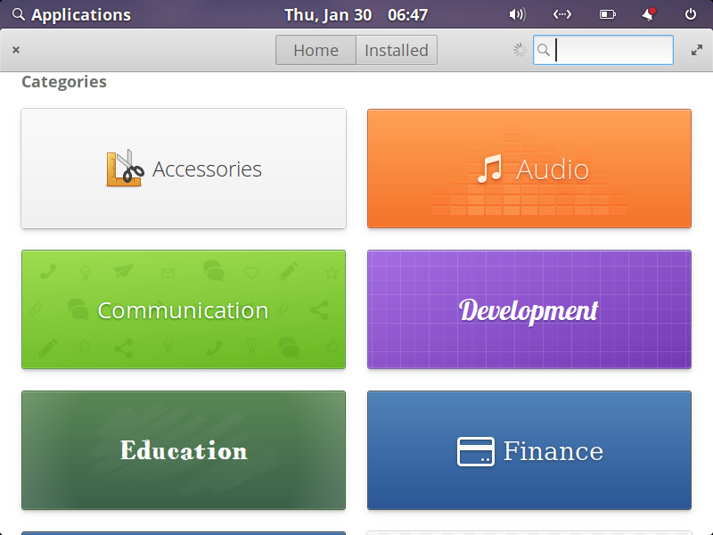
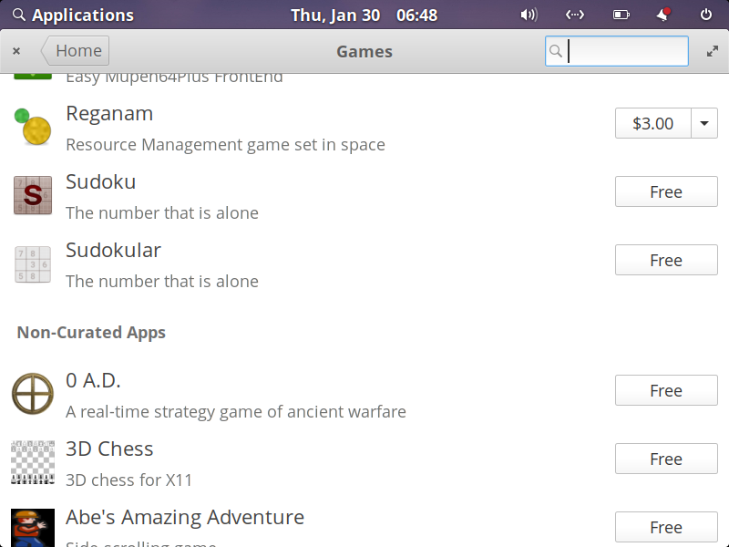
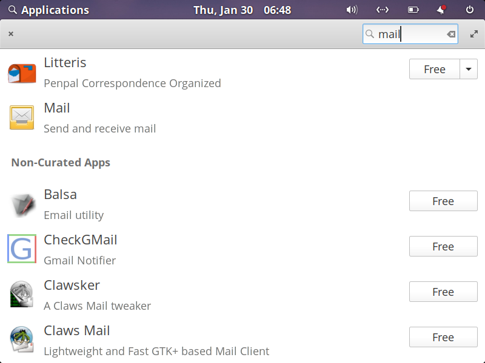
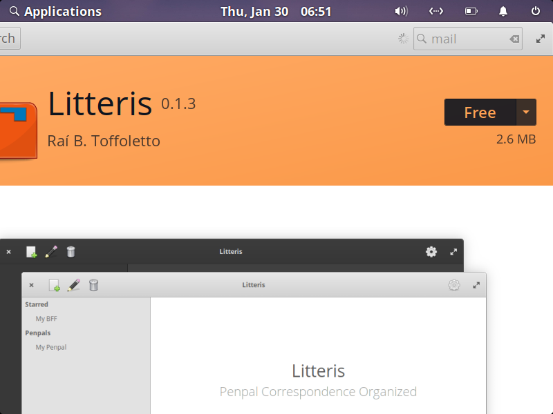
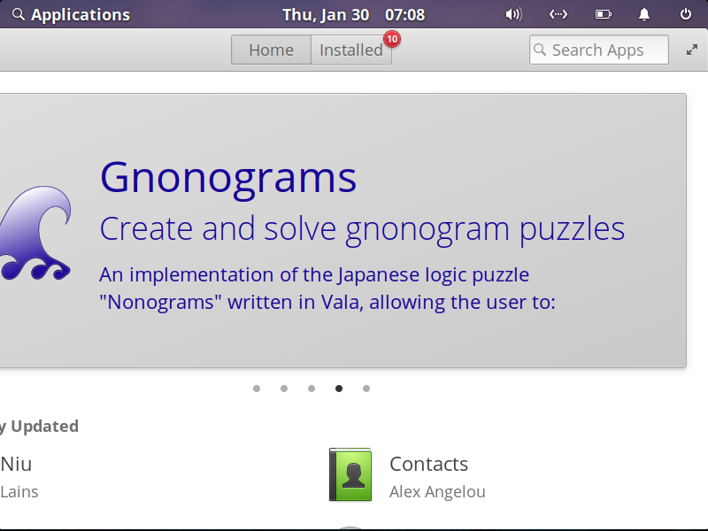
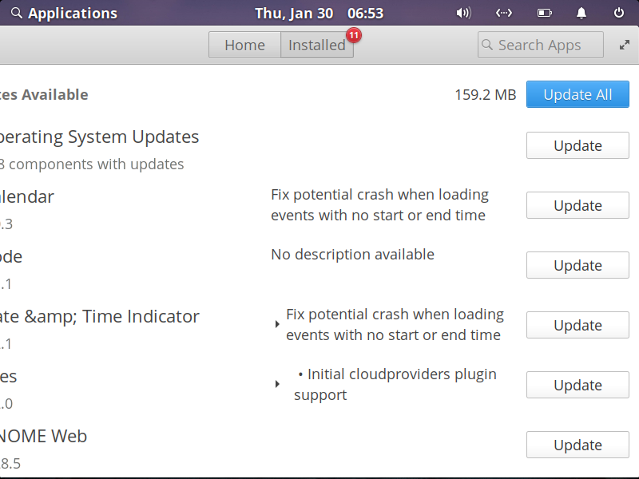
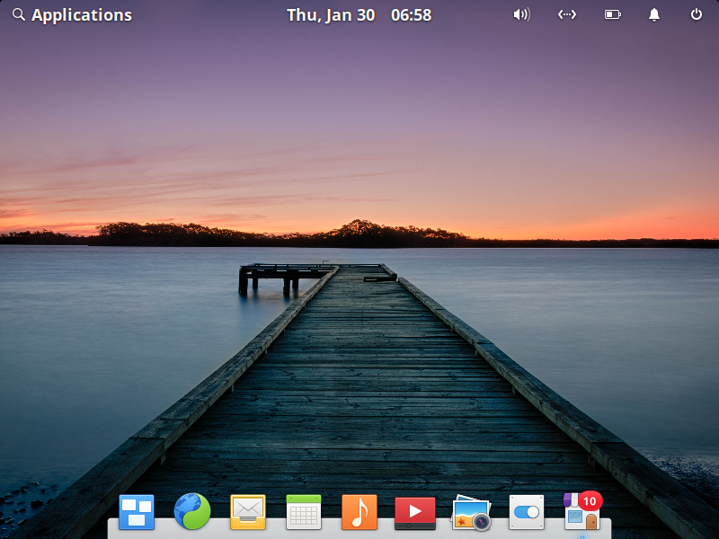
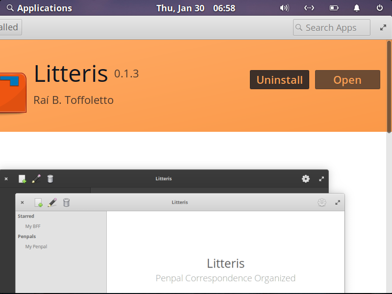

How to Use AppCentre
AppCenter allows you to install and manage software for your elementary OS system.
How to Open AppCentre:
AppCentre's Home allows you to browse categories of software and search for software.
How to browse Categories for software:
How to search AppCentre for software:
NOTE: Many Curated Applications have pay-what-you-want pricing. You may opt out of supporting developers by selecting "$0".
AppCentre's Installed allows you to update, review and uninstall software.
How to update elementary OS software with AppCentre:
How to uninstall software with AppCentre:
How to Open AppCentre:
- Click on the Application Drawer in the top left corner of your display.
- Click on AppCentre.

HOME
AppCentre's Home allows you to browse categories of software and search for software.
How to browse Categories for software:
- Scroll down the Home panel to see different categories of software.
- Click on a category of software.

NOTE: Applications at the top of a Category are Curated Applications. Applications below the "Non-Curated Apps" do not conform to the HIG of elementary OS. They may not function as expected but can be installed.

How to search AppCentre for software:
- Click the text field in the top right of AppCentre's Home.
- Type a keyword to search AppCentre.

- Click on a software you want to install.
- On details page click Free on the top right.
- Type your user password when prompted for Authentication.
- Click on Authenticate or Press Enter.

NOTE: Many Curated Applications have pay-what-you-want pricing. You may opt out of supporting developers by selecting "$0".
Congratulations, you have installed your first elementary OS application!
Installed
AppCentre's Installed allows you to update, review and uninstall software.
How to update elementary OS software with AppCentre:
- Click on AppCentre in your Plank or Open in your Application Drawer.
- Click on Installed.
- Click on Update in the top right.
- Type your user password when prompted for Authentication.
- Click on Authenticate or Press Enter.



NOTE: By default AppCentre will check for new updates to any software you have installed. When a new update is available AppCentre will appear on your Plank.
How to uninstall software with AppCentre:
- Click on AppCentre in your Plank or Open in your Application Drawer.
- Click on Installed.
- Click on the application you want to uninstall.
- Click on uninstall in the top right of the application's details page.
- Type your user password when prompted for Authentication.
- Click on Authenticate or Press Enter. NOTE: Some applications, like AppCentre, cannot be uninstalled. This is for your protection.
